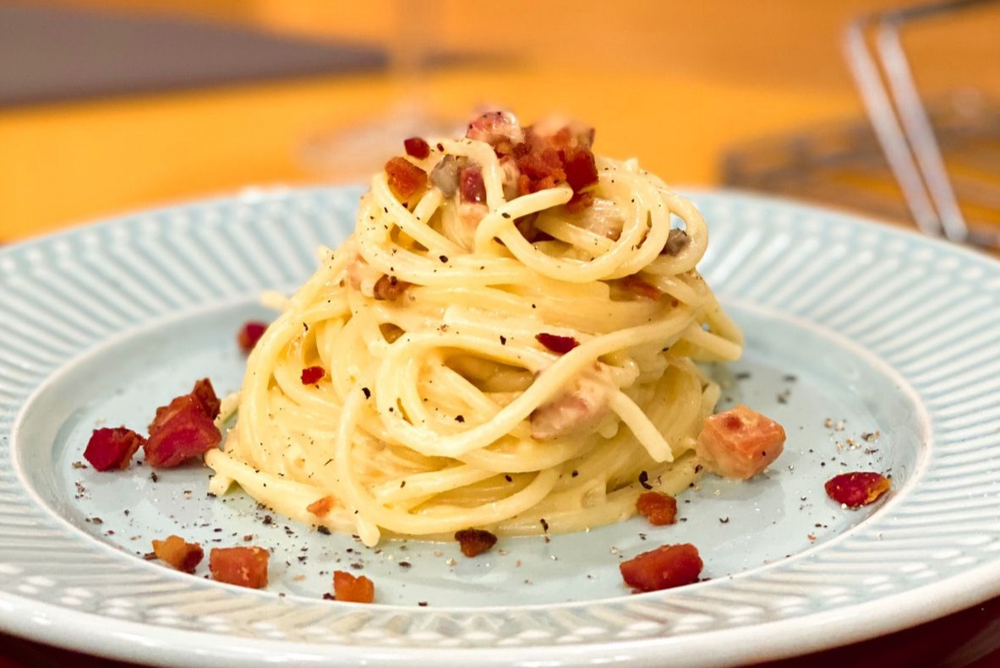
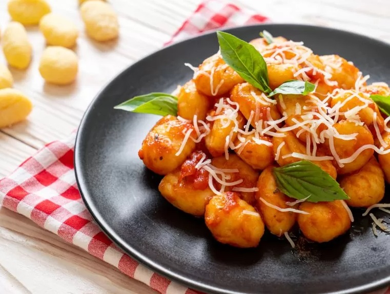

Água e farinha são os ingredientes principais de um tipo de prato que sempre faz sucesso: as massas. Saiba como fazer pizza, spaghetti, pão, macarrão e outras receitas de massas, sempre com os molhos e recheios mais gostosos.
Macarrão à Carbonara
Nhoque Recheado
